Саморезы, шурупы
75 типов изделий в категории.

ART 9051 Саморез с цилиндрической головкой и внутренним шестигранником
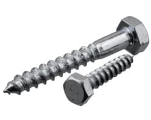
DIN 571 Шуруп сантехнический
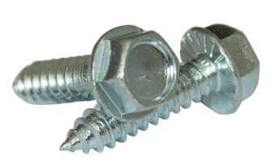
DIN 6928 Саморез с шестигранной головкой
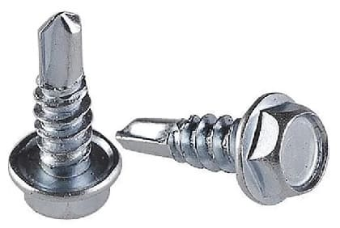
DIN 7504 K Саморез c буром и шестигранной головкой

DIN 7504 N Саморез с полукруглой головкой и буром (JP81)
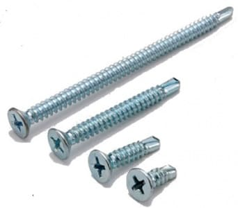
DIN 7504 P Саморез с потайной головкой и буром (JP82)
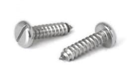
DIN 7971 Саморез с плоской головкой и прямым шлицем

DIN 7973 Саморез с полупотайной головкой и прямым шлицем

DIN 7976 Саморез с шестигранной головкой

DIN 7981 Саморез с полукруглой головкой Ph, Pz
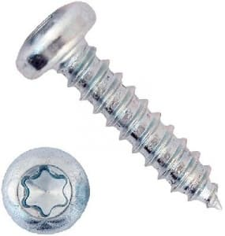
DIN 7981 Саморез с полукруглой головкой Torx
DIN 7981 и ГОСТ 10621-80 - сравнение стандартов на саморезы
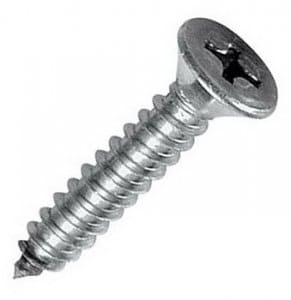
DIN 7982 Саморез с потайной головкой
DIN 7982 и ГОСТ 10619-80 - сравнение стандартов на саморезы
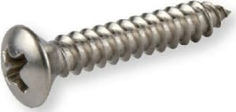
DIN 7983 Саморез с полупотайной головкой

DIN 7996 Шуруп по дереву с полукруглой головкой
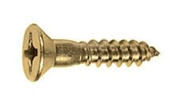
DIN 7997 Шуруп с потайной головкой

DIN 95 Шуруп с полупотайной головкой и прямым шлицем

DIN 96 Шуруп с полукруглой головкой и прямым шлицем
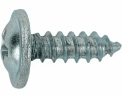
DIN 968 Саморез с прессшайбой
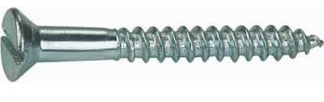
DIN 97 Шуруп с потайной головкой прямой шлиц
ISO 14585 Саморез с полукруглой головкой Torx

ISO 14586 F Саморез с потайной головкой и тупым концом

ISO 14586 Саморез с потайной головкой Torx

ISO 7050 Саморез с потайной головкой
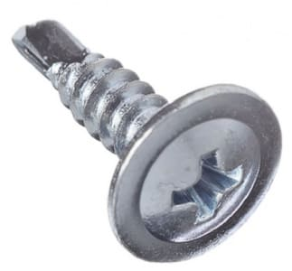
JPMT Саморез с прессшайбой со сверлом

SPAX Саморез для массивной доски ART 88195

SPAX Саморез конструкционный с прессшайбой ART 88193

SPAX Саморез с полукруглой головкой ART 88093
SPAX Саморез с полупотайной головкой ART 88092
SPAX Саморез с потайной головкой ART 88091

SPAX Саморез с потайной головкой и отверстием под пластиковую заглушку ART 88099

SPAX Саморез с потайной головкой и полной резьбой ART 88196

SPAX Саморез с потайной головкой под крест ART 88094

SPAX Саморез с прессшайбой ART 88197

SPAX Саморез фасадный с потайной головкой ART 89018

SPAX-D Саморез для террасной доски ART 88192

SPAX-M Саморез для МДФ панелей ART 88198
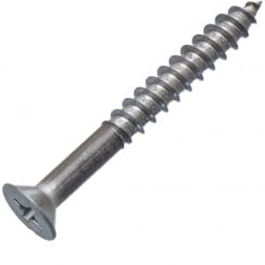
ГОСТ-1145-80 Шуруп с потайной головкой
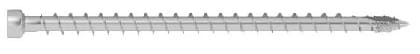
Конструкционный саморез с цилиндрической головкой VGZ7200

Кровельный саморез по дереву со сверлом KRS
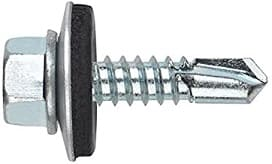
Кровельный саморез по металлу со сверлом KRS

Саморез антивандальный по дереву с полукруглой головкой ART 88110
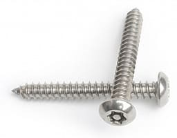
Саморез антивандальный с полукруглой головкой ART 88114

Саморез антивандальный с потайной головкой ART 88115

Саморез для крепления гипсокартона к профилю SF

Саморез для пластика ART 88202

Саморез для пластика с полукруглой головкой ART 88200

Саморез для сэндвич-панелей

Саморез для сэндвич-панелей HARPOON ASP-R-Z19

Саморез клоп с буром JPMT

Саморез конструкционный по дереву с потайной головкой

Саморез конструкционный по дереву с прессшайбой

Саморез конструкционный по дереву с цилиндрической головкой
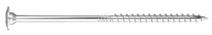
Саморез конструкционный с тарельчатой головкой TBS
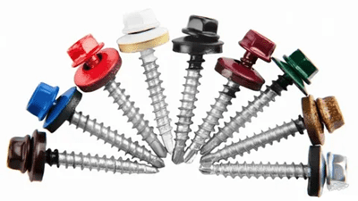
Саморез кровельный RAL
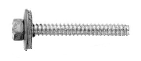
Саморез кровельный с шайбой EPDM ART 88276
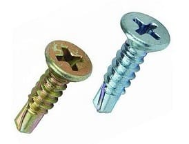
Саморез оконный со сверлом
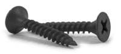
Саморез по дереву для гипсокартона ART 89150
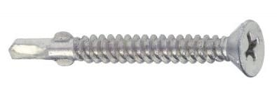
Саморез по металлу-дереву Flugel JFL

Саморез потай универсальный Torx ART 89098

Саморез с потайной головкой Torx ART 88098
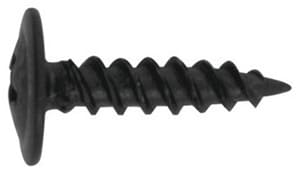
Саморез с прессшайбой острый LI

Саморез тупой для пластика усиленный ART 88204

Саморез универсальный с полукруглой головкой KK

Саморез универсальный с потайной головкой UK

Саморез-шуруп CF для гипсокартона по дереву

Саморезы и шурупы
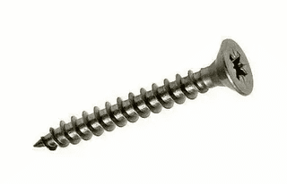
Шуруп для ДСП с потайной головкой ART 89097

Шуруп для пластика ART 9091
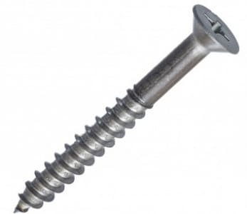
Шуруп с потайной головкой под крест ART 88097
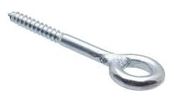
Шуруп-кольцо для строительных лесов

Шуруп-кольцо по дереву ART 88133
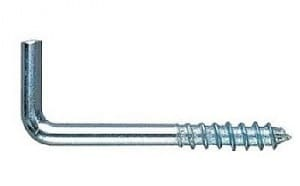
Шуруп-костыль Г (L)-образный (крюк) ART 88137